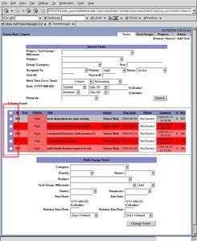

Using the 'bulk change' mechanism, one can change multiple tasks simultaneously. This proves to be very useful when projects get re-prioritized/delayed, or when trying to create some sort of organization out of a disorganized list of tasks. Leaving any fields blank means to not make changes with that respective field. One powerful use of this module is to take a large group of disorganized tasks and to group them together over several iterations, such as assigning a product, project, task group, task category, etc...
To select the tasks to change, click on any of the checkboxes to the left of each task. To select all, click on the checkbox next to the headers. To de-select all, uncheck that master checkbox once it's checked.
As tasks can belong to multiple task groups and milestones, setting this field will allow you to either add or remove a single task group/milestone at a time, depending on whether the 'Add' or 'Remove' option is selected, respectively.
Setting the start date / due date will give you the ability to shift priorities around, such as if more important tasks/projects appear out of nowhere, or take longer than normal.
The relative dates provide a way to say that tasks should have their start or due dates altered forwards or backwards by a certain number of days/weeks. This proves to be very useful when you get a list of tasks in a project that has delays.
Changes will take effect once you click on 'Change Tasks'. From there, the search page will reload. If some tasks no longer fit in the search criteria, they will no longer show up.